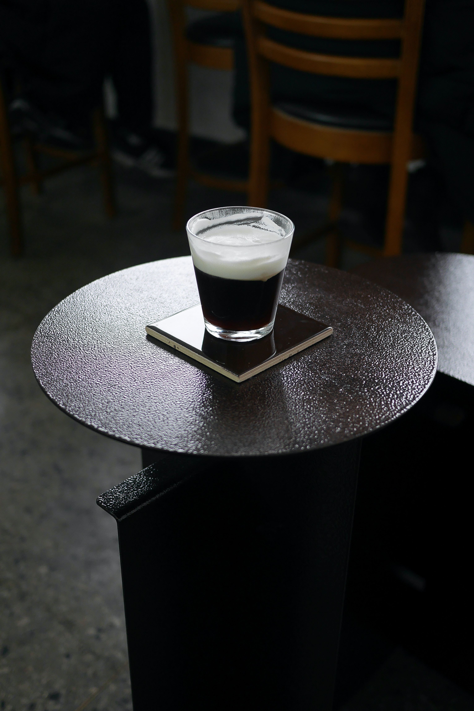
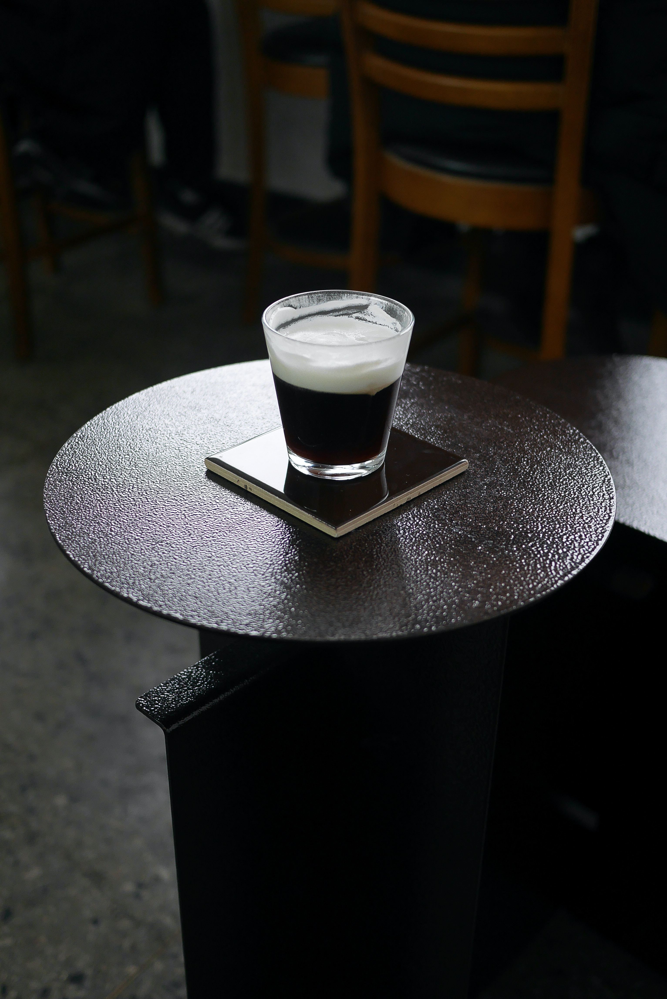

아인슈페너(오스트리아 독일어: Einspänner) 오스트리아의 커피 음료이다. 크림을 올린 커피로, 멜랑슈와 함께 비엔나 커피(영어: Vienna coffee)로 불리는 커피 음료의 하나이다.
 

독일어 "아인슈페너(Einspänner)"는 원래 말 한 마리가 끄는 마차를 뜻하는 말이다.이전에는 주로 비엔나 커피라고 불렸는데, 이는 오스트리아 빈(비엔나)에서 유래했기 때문이다.과거 마차에서 내리기 힘들었던 오스트리아 빈의 마부들이 한 손에는 고삐를 들고 한 손에는 피곤을 풀기 위해 설탕과 생크림을 듬뿍 얹은 진한 커피를 마신 것에서 아인슈페너가 시작됐다고 전해진다.